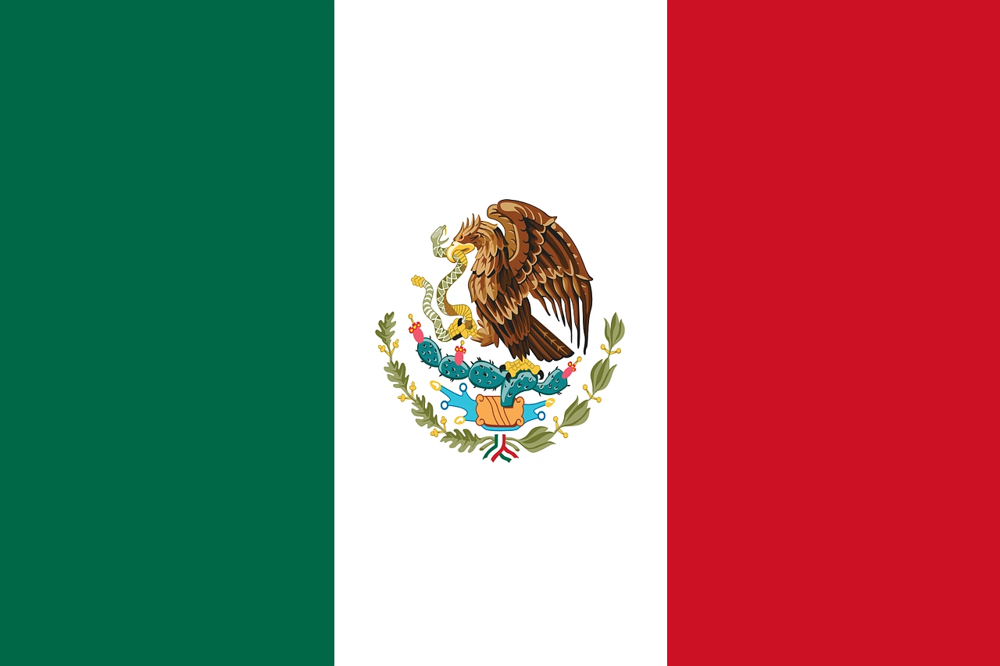
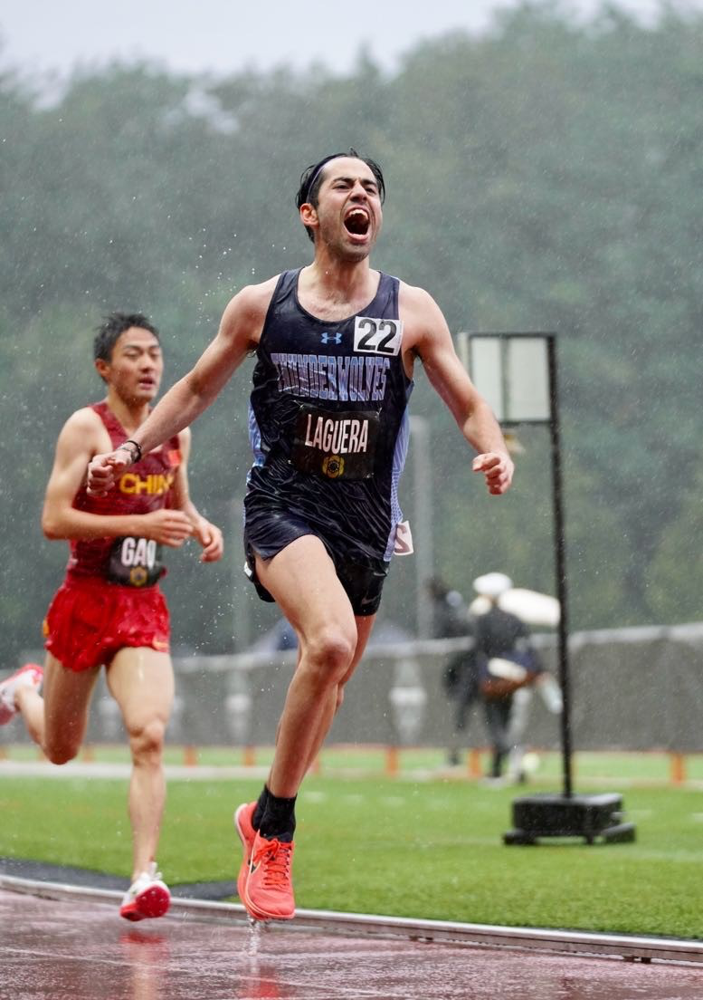

Marcelo Laguera

Country: Mexico
School: Colorado State University, Pueblo
DOB: January 12, 1996
Personal Bests:
3000m - 8:03.08 (Indoor)
5000m - 13:40.22
10000m - 28:05.83
Half-Marathon - 1:03:07
NCAA II National Cross Country Champion and multiple-time all-American in cross country and track. Recently competed in the 2023 World Cross Country Championships and currently preparing for the 2023 Pan-Am Games and World Running Half-Marathon Championships.
